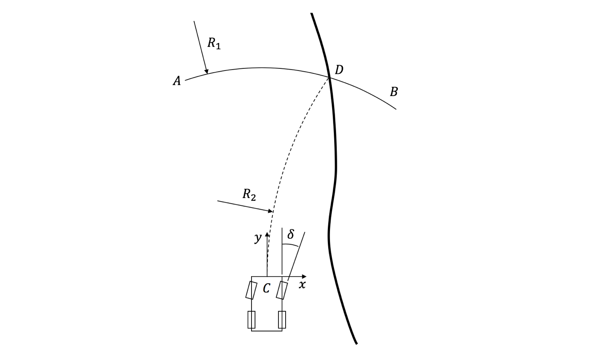
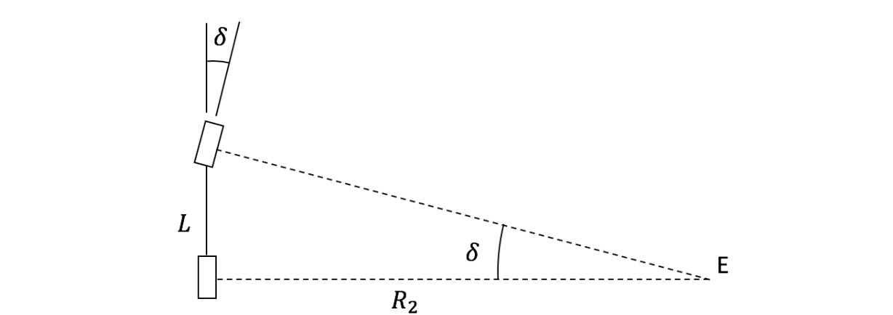

path_follower
The path_follower package is to control the vehicle using Pure Pursuit (PP) controller. The logic is described as follows.
Inputs
Following are the arguments are required by path_follower.launch package
Vehicle State
| Name | Description |
|---|---|
/state/x | global x position (m) |
/state/y | global y position (m) |
/state/psi | global heading angle (rad) |
/state/ux | velocity in the x direction (vehicle frame) in (m/s) |
Trajectories
| Name | Description |
|---|---|
/trajectory/x | global x position trajectory (m) |
/trajectory/y | global y position trajectory (m) |
Output
The output of this package is as follows.
Vehicle State
| Name | Description |
|---|---|
/control/sa | steering angle at the tire (rad) |
/control/thr | throttle input, range: [0, 1] |
/control/brk | break input, range: [0, 1] |
Logic
The Logic of the Pure Pursuit (PP) controller is shown in the figure below.

When a path is given to the vehicle to follow, we will first draw an arc AB with radius R1, and the center of the arc is the vehicle itself. R1 can is chosen to be proportional to the vehicle speed, R1=Kv, with saturation Rmax and Rmin to avoid the case of no solution. Then, find the intersection (point D) between arc AB and the planned path, and express the position of point D as (xD, yD) using the vehicle coordinate system. Point D is the position where the vehicle wants to arrive next. To command the vehicle to head towards point D, we fit another arc CD which passes through the current vehicle position (0, 0) and (xD, yD), and the direction of the arc at (0, 0) is straight up. The radius of the arc CD is R2, which is also the radius of curvature of the real vehicle path. Then, the relationship between R2 and (xD, yD) can be expressed as
Then we have

The radius of curvature R_2 is closely related to the steering angle as shown in the figure below. Point E is the instantaneous rotation center of the vehicle.

Finally, assume there is no slip between tires and the ground. The relationship between the steering angle and the radius of curvature R_2 is
Where L is the wheelbase.